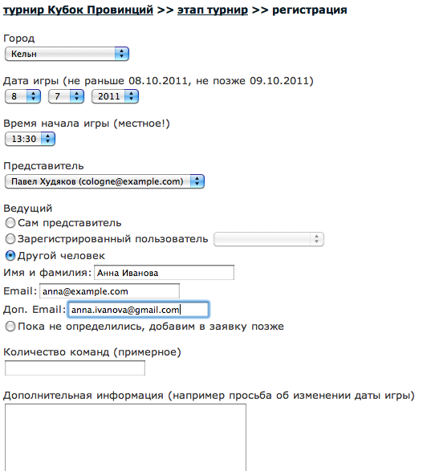

Прочитав объявление со ссылкой на страницу регистрации, представитель может кликнуть по ней (если пока не зарегистрированы в "синхронотопе", это надо сделать)
На странице регистрации нужно внести дынные предстоящей игры. Обратите внимание - есть несколько возможностей внести ведущего. Когда, заполнив заявку, вы нажмете на "сохранить", письмо с указанной Вами информацией отправится вам, ведущему и организаторам турнира. 
Получив заявку, организатор может ее принять или отклонить. Для этого нужно, пойдя на страницу заявки, измнить ее статус с "новая" на "принята" или "отклонена"
Как только статус заявки меняется, представитель получает об этом письмо. Если заявка принята, письмо также содержит ссылки на страницы сдачи спорных, апелляций, результатов и составов.
Представитель может менять данные заявки. В этом случае она автоматически возвращается в статус "новая" и требует повторного (если еще не) рассмотрения организаторами.
На странице этапа есть ссылка "все заявки", по которой представитель может кликнуть. На этой странице можно:
Теперь все готово для проведения турнира.
Назад